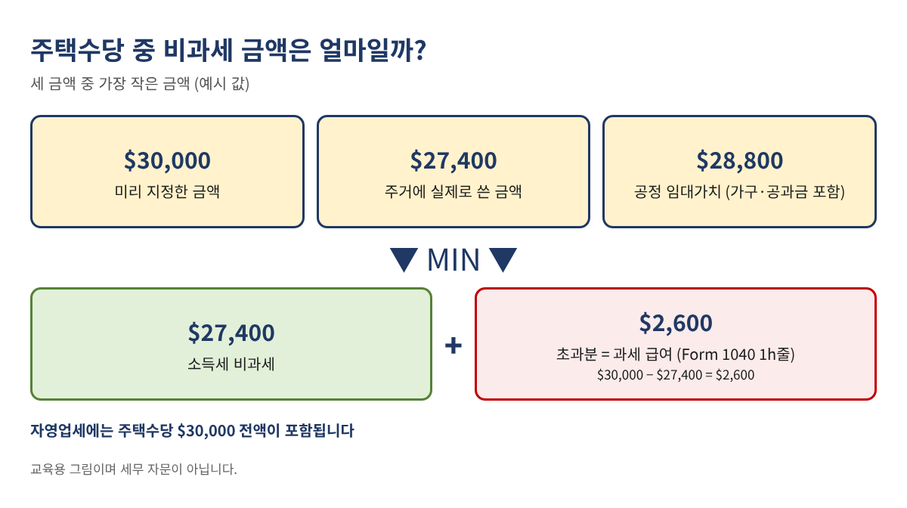
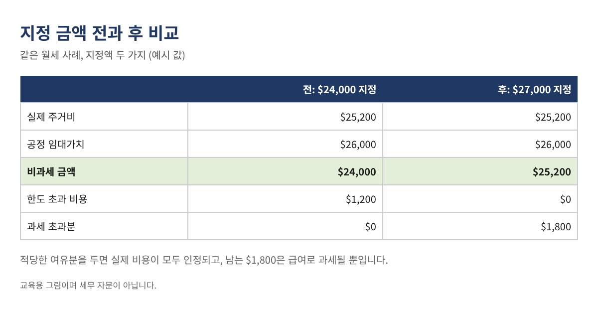
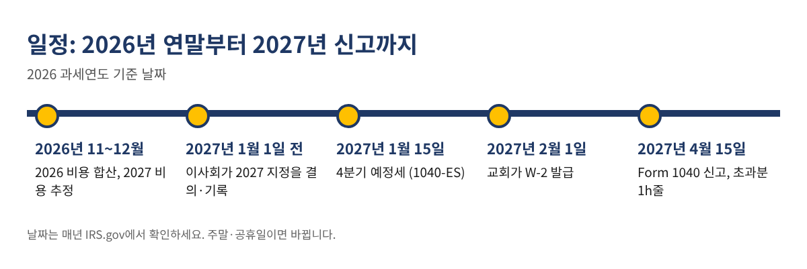

해마다 12월이 되면 교회 재정부와 목사님들이 같은 질문을 하십니다. 올해 받은 주택수당 중 정말 세금이 안 붙는 금액은 얼마인지, 그리고 내년 1월 첫 사례비가 나가기 전에 당회에서 얼마를 지정해야 하는지입니다. 두 가지 모두 자주 틀리는 부분이지만, 규정을 알고 나면 엑셀 수식 몇 줄로 정리됩니다. 이 글에서는 규정, 예시 세 가지, 많이 놓치는 자영업세(SE tax), 그리고 연말 체크리스트까지 차례대로 설명합니다.
이 글은 교육용 정보이며 세무·법률 자문이 아닙니다. 아래 숫자는 모두 예시입니다. 연방 규정 기준이며 주(State) 규정은 다를 수 있으니, 실제 적용은 세무 전문가와 확인하세요.
사례비 일부를 주택수당(parsonage allowance, rental allowance라고도 합니다)으로 받는 목사님·사역자, 교회 사택에 사시는 분, 그리고 주택수당을 정하고 W-2를 준비하는 교회 재정 담당자를 위한 글입니다. 주택수당은 목회자 세금 신고에서 가장 큰 항목인 경우가 많아서, 지정을 빠뜨리거나 금액을 잘못 정하면 비과세였어야 할 돈이 그대로 과세 급여가 됩니다.
IRS 안내에 따르면, 목회자가 지급 전에 공식적으로 지정된 주택수당을 받고 총 사례가 업무에 비해 적정하다면, 다음 세 금액 중 가장 작은 금액을 총소득에서 제외할 수 있습니다.
이 금액을 넘어 받은 부분은 과세됩니다. IRS는 이 초과분을 Form 1040 1h줄에 급여로 넣고, 옆 점선에 "Excess allowance"와 금액을 적으라고 안내합니다. 또 주택수당은 받은 해에 사용해야 합니다.

| 항목 | 금액 |
|---|---|
| 2026년 지정·지급액 | $30,000 |
| 실제 주거비 (모기지 상환액, 공과금, 보험, 재산세, 수리, 가구) | $27,400 |
| 공정 임대가치 (가구·공과금 포함) | $28,800 |
| 비과세 금액 (가장 작은 금액) | $27,400 |
| 과세 초과분 (1h줄) | $2,600 |
날짜, 분류, 지급처, 금액 네 칸짜리 기록표를 만들고 지급할 때마다 한 줄씩 적습니다. 보통 인정되는 비용은 월세, 모기지 상환액(원금+이자), 공과금, 주택 보험, 재산세, HOA 관리비, 수리·관리비, 집에 들이는 가구·가전입니다. 식비, 청소 서비스, 별장, 교회가 이미 직접 낸 비용은 보통 들어가지 않습니다.
A~D열에 기록하고 B열이 분류, D열이 금액이라면 다음 수식으로 합계를 냅니다.
=SUMIFS(D:D, B:B, F2)=SUM(D:D)=SUM(D:D)-SUM(G2:G10) 결과가 0이어야 합니다.공정 임대가치는 그 집을 가구와 공과금 포함으로 세를 준다면 받을 금액입니다. IRS가 정해 주는 표는 없으니 근거를 남겨야 합니다. 근처의 비슷한 임대 매물 2~3곳을 찾아 가구 포함 월세를 쓰거나(없으면 가구 값을 적정하게 더하고), 월평균 공과금을 더한 뒤 12를 곱합니다. 매물 화면은 기록과 함께 보관하세요. 이 금액이 한도가 되기 때문에, 이보다 훨씬 크게 지정해도 그 부분은 비과세가 되지 않습니다.
B1에 지정액, B2에 실제 지급액, B3에 실제 주거비, B4에 공정 임대가치를 넣습니다.
=MAX(0, MIN(B1, B2, B3, B4))=MAX(0, B2-B6)=MAX(0, B3-B6)MIN 안에 "실제 지급액"을 넣는 이유는, 교회가 지정액보다 적게 지급했을 때 실제로 받은 돈까지만 제외할 수 있기 때문입니다.
당회가 $24,000을 지정했습니다. 월세 $2,000에 공과금 $1,200이 들어 실제 비용은 $25,200, 공정 임대가치는 $26,000입니다. 비과세 금액은 지정액인 $24,000이고, 나머지 $1,200의 실제 비용은 인정받지 못합니다. 지정액을 조금만 높였다면 어땠을지 그림 2에서 비교해 보세요.

IRS는 주택수당이 소득세에서는 제외되지만 자영업세에서는 제외되지 않는다고 분명히 안내합니다. 교회 사택의 임대가치도 자영업세 계산 순소득에 들어갑니다. 교회는 목회자 사례비에서 사회보장세·메디케어를 원천징수하지 않으므로, 목회자가 Schedule SE로 직접 냅니다.
| 예시 A, 2026년 (예시 값) | 금액 |
|---|---|
| 교회 사례비 (W-2 1번 칸) | $48,000.00 |
| + 지급된 주택수당 | $30,000.00 |
| × 92.35% = 자영업 순소득 | $72,033.00 |
| 사회보장세 12.4% (상한 $184,500까지) | $8,932.09 |
| 메디케어 2.9% | $2,088.96 |
| 자영업세 추정액 | $11,021.05 |
C1에 순소득을 넣었다면: =IF(C1<400, 0, ROUND(MIN(C1,184500)*12.4%,2) + ROUND(C1*2.9%,2)). 고소득자에게 붙는 추가 메디케어 0.9%는 빠져 있습니다. 분기별 Form 1040-ES로 내거나, 교회에 매 사례비마다 연방 소득세를 조금 더 원천징수해 달라고 요청하는 방법이 있습니다.
교회가 임대가치 $21,600인 사택을 제공하고 공과금 수당 $4,800을 지정했는데, 실제 공과금은 $3,900이었습니다. 소득세에서는 사택 임대가치가 제외되고, 수당 중 $3,900이 비과세, $900은 초과분입니다. 자영업세에서는 모두 포함됩니다: 사례비 $52,000 + 수당 $4,800 + 사택 임대가치 $21,600 = $78,400, 여기에 92.35%를 곱하면 $72,402.40이고 자영업세는 약 $11,077.57입니다.
주택수당은 지급 전에 교회의 공식 결의로 지정해야 하며, 보통 당회·이사회 회의록이나 서면 결의문으로 남깁니다. 이미 지급한 사례비에는 소급할 수 없고, 변경은 이후 지급분에만 적용됩니다. 금액은 내년 월별 예상 비용을 적어 12를 곱하고, 수리 등에 대비해 10% 정도 여유분을 더한 뒤 공정 임대가치와 비교해 정합니다. 실제 비용보다 조금 높게 지정해도 손해는 없습니다. 남는 부분은 급여로 과세될 뿐입니다.

3월 이후 지급분부터 적용됩니다. 1~2월에 이미 지급한 사례비는 소급되지 않습니다. 그래서 많은 교회가 "변경될 때까지 매년 유지한다"는 문구를 결의문에 넣습니다.
일반적으로 항목별 공제를 하신다면 비과세 주택수당으로 낸 비용이라도 공제할 수 있습니다. 항목별 공제가 유리한지는 전체 신고 내용에 따라 다르니 세무 전문가와 확인하세요.
지정된 주택수당은 1번 칸 급여에 넣지 않습니다. 많은 교회가 14번 칸이나 별도 안내문에 금액을 적어 목회자가 신고할 때 쓰도록 합니다.
계산에는 실제로 지급한 금액을 씁니다. 받지 않은 돈은 제외할 수 없습니다.
이 수식과 주거비 기록부, 지정 결의문 예시, 체크리스트를 담은 목회자 주택수당 플래너는 아래 무료 키트 다운로드에서 가입 없이 무료로 받으실 수 있습니다(엑셀 + PDF 가이드).
면책: 이 글은 일반적인 교육용 정보이며 세무·법률·재무 자문이 아닙니다. 규정과 수치는 바뀔 수 있으니 IRS.gov를 확인하고 세무 전문가와 상담하세요.